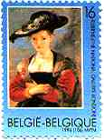

| PURPOSES -
The Stamps Art Gallery section shows how beautiful the stamps of the
chosen topics are and to stimulate people to collect them. Some pages are
quite informative, others are rather based on the impact of the works of
art displayed, yet a few will even try to entertain you.
- It tries to illustrates how many different
and interesting collecting areas the Arts on Stamps topic can contain.
Here are some of these
areas, cited as
examples:
- The Rock Art page will
transport you into the prehistory of humanity and display some
astonishing works of art.
- The Landscape page mainly
speaks about a painting that I love.
- I thought of the Flowers page as a
gift to my wife for her birthday.
- The Postal Stamps History is rather
nostalgic, but also exhibits the advances in the stamps printing technology.
- The Nudes on Stamps page
reserves some surprises to its visitors...
- Do you love animals? Many of them can be found on paintings of renown artists.
- There is also something
interesting for the fans of stained glass, pottery and ceramics.
- On the Beautiful Woman on Stamps page
I haven't only displayed my personal preferences. I observed people in museums, I have
also noticed what "less sophisticated" people hang onto their walls at home. On
the bottom of the same page, to underline the contrast, I exhibited works that people with
common sense will rather ignore.
- Some works have suffered during their existence.
Take a look at them on the Shot Art page.
- Do you like to visit
museums? Some renown ones, like Le Louvre, National Gallery, Metropolitan
or Hermitage hold the doors permanently open for you on this site.
- The Errors on Stamps page
shows sometimes small, but in a few cases really incredible errors on
Art stamps.
- Many other subjects, referring
to interesting subtopics, are treated on several pages.
NOTES
- The vertical menu on the
left of this page permits to browse the whole gallery.
- To reduce the loading time,
some stamps
images are compressed nearly to the maximum possible extent for an acceptable quality.
A certain loading time is still necessary, but it doesn't normally exceed one
to two minutes per page. Users of modems having the speed of 28.8K, please be patient,
and eventually upgrade to 56K or better.
- Links to interesting art sites are displayed when appropriate.
And now, please enter the
Art Gallery,
that is open for you 24/7, and take some time to visit it. Eventually
use your sofa when you need a break (profit by it, you will not easily find such a good sofa in a real
museum).
|
 |